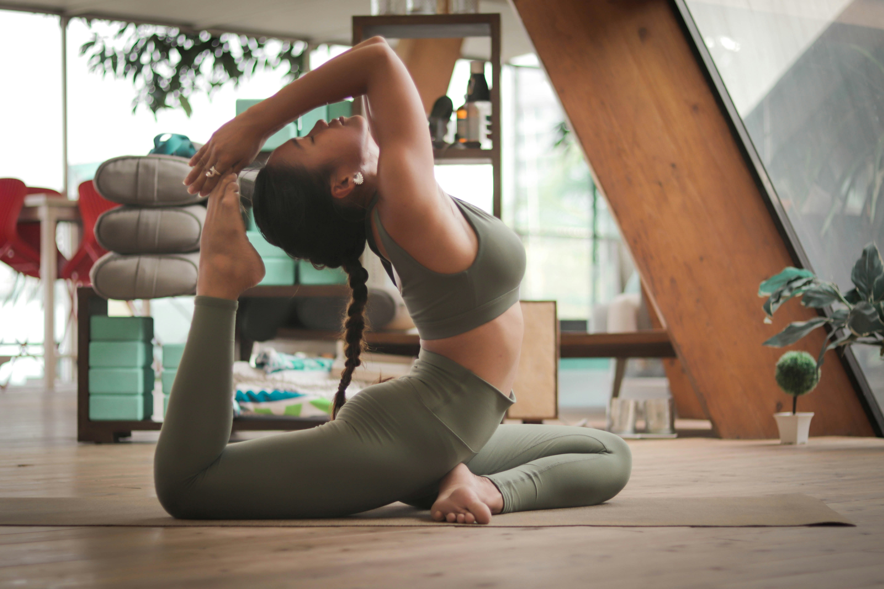

A well-rounded fitness plan incorporates different types of exercises to improve strength, endurance, and
flexibility. Whether you're a beginner or an experienced gym-goer, here are some detailed routines to help you
achieve your goals.

Full-Body Strength Training Routine
This routine is perfect for beginners and those looking to build a solid foundation. It targets all major
muscle groups in a single session. Perform this routine 2-3 times per week, with at least one day of rest in
between
Warm-up (5-10 minutes):
Light cardio like jogging on the treadmill or cycling to increase
blood flow and prepare your muscles.
The Routine:
Perform 3 sets of 10-12 repetitions for each exercise.
Squats:Targets glutes, hamstrings, and quads.
Push-ups: Works chest, shoulders, and triceps. (Modify on your knees if needed).
Dumbbell Rows: Builds back and bicep strength. (Use a bench for support).
Overhead Press: Strengthens shoulders and triceps.
Plank: Improves core stability and strength. (Hold for 30-60 seconds).
Cool-down (5-10 minutes):
Static stretches for the muscles you worked.
Cardio and Endurance Routine
Cardiovascular exercise strengthens your heart and lungs, improves endurance, and helps with calorie
expenditure.
High-Intensity Interval Training (HIIT):
Method: Alternate between short bursts of intense exercise and brief recovery
periods.
Example (Treadmill): 1-minute sprint, followed by a 2-minute walk. Repeat 5-8 times.
Benefits: Highly effective for fat burning and improving cardiovascular fitness in a
short amount of time.
Steady-State Cardio:
Method: Alternate between short bursts of intense exercise and brief recovery
periods.
Example (Treadmill): 1-minute sprint, followed by a 2-minute walk. Repeat 5-8 times.
Benefits: Highly effective for fat burning and improving cardiovascular fitness in a
short amount of time.
Flexibility and Mobility
Flexibility is crucial for preventing injuries and improving your range of motion.
Stretching:
Incorporate stretching into every workout.
Method: Alternate between short bursts of intense exercise and brief recovery
periods.
Example (Treadmill): 1-minute sprint, followed by a 2-minute walk. Repeat 5-8 times.
Benefits: Highly effective for fat burning and improving cardiovascular fitness in a
short amount of time.
Yoga:
A great way to combine stretching with strength and balance. It's excellent for both
physical and mental well-being.
The "Push, Pull, Legs" Split
This routine is popular among more advanced lifters. You focus on different muscle groups on separate days.